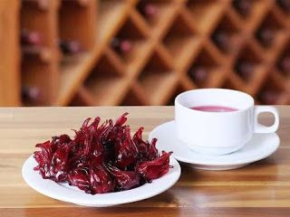

Thơm Ngon Tuyệt Hảo – Đậm Đà Khó Quên
Atiso đỏ hay còn gọi là bụp giấm, bụp chua, giền chua, cây rau chua, hoa vô thường… Tên tiếng anh của atiso đỏ là hibiscus. Trong từ điển tiếng Việt thì hibiscus có nghĩa là hoa dâm bụt. Tuy nhiên, atiso đỏ ở đây không phải là loại hoa dâm bụt mọc nhiều ở Việt Nam như bạn vẫn biết mà là loại hoa vốn được dùng phổ biến trong món mứt hoa hồng nổi tiếng của Đà Lạt.